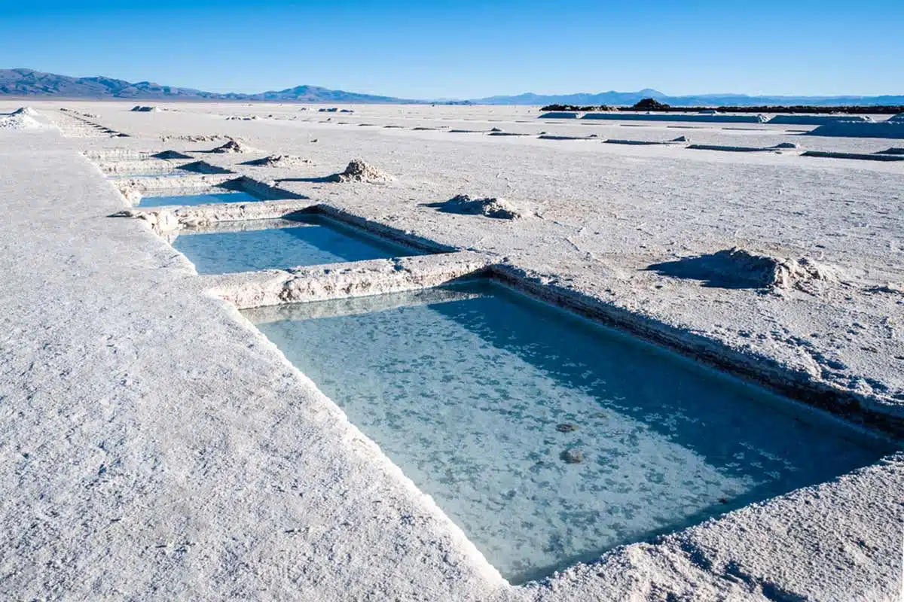
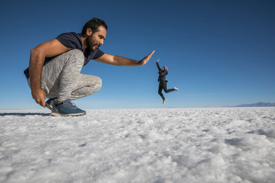

Quick Fact
Salinas Grandes formed when an ancient lake dried up.
Welcome to Salinas Grandes

Salinas Grandes, which are actually the remains of a prehistoric lake that evaporated, leaving a lithium-rich crust 30 centimeters thick!"
A vast, blindingly white salt flat located high in the Andes mountains.
It’s the "Lithium Triangle." The salt crust isn't just pretty; it’s sitting on top of massive brine deposits of Lithium, the "white gold" used for EV batteries."
There is a huge ongoing "Water vs. Wealth" debate here between mining companies and indigenous communities who want to protect the ancient salt-harvesting methods.
What to Expect

A surreal, bright white landscape and the "turquoise eyes"—man-made pools of vibrant blue water carved into the salt.
Visual illusions. The high-altitude salt crust is so white and flat it messes with your depth perception—perfect for those "tiny person" perspective photos.